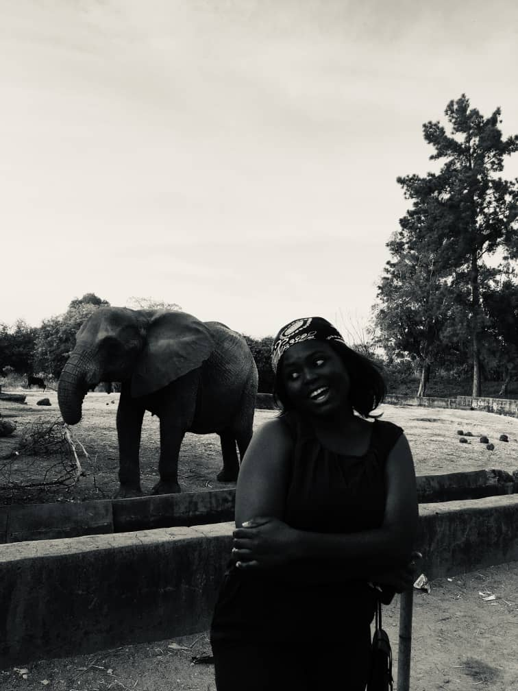
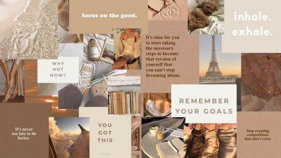

A SHORT STORY ABOUT ME
About Jojo
My name is Priscilla Adetutu Shoyemi. I come from ogun state in Nigeria, I'm 24 years old,i was born may 25th 1999 in lagos state.I'm a graduate of religious studies from the department of Religion and Philosopy in the university of Jos,plateau state.
`My hobbies are baking, listening and vibing to music,watching movies and minding my business [LOL]. I'm an introvert.
INTEREST IN PRODUCT DESIGN
Firstly i got into tech majorly because my brother insisted i acquired a tech skill considering the rate at which tech has taken over our curent generation
So i began to search online for a tech skill,most importantly, one that would be easy for me to learn.Then i came across product design. Product design entails making a website look attractive in order to make people want to spend extra time on the website.
So i said to myself i would love to give this a trial and create something beautiful.
Along the line, my brother once again adviced i learned fullstack,of which he gave some understandable reasons. After this discussion,i looked up the internet to read about fullstack. It was quite a lot,but then i'm still skeptical about learning it. For now i have chosen to still go with product design product,maybe along the line especially now that the learning process is getting interesting,i won't pressure myself but i will ensure i understand what i'm been taught,that way i'll conclude if i want to learn fullstack
 